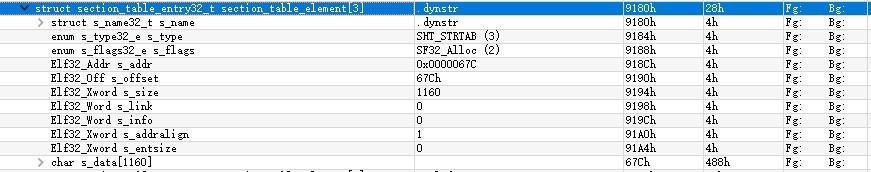

对elf文件格式进行简单探索
{现在也没搞移动安全，目前专注于终端安全，这就是过程吧，哈哈~}
背(che)景(dan)
又到了每年的中秋节了，话说从大学开始，对于节日的回忆基本都停留在了学校中，尤其是大三开始，每逢节日都会窝在宿舍中学习一些东西，大三的清明节了解了下缓冲区溢出，大四的清明节，在准备面试，也在学一些东西，貌似是Windows内核啥的。ok，时间转到了大学最后一个学期，清明节忙着写毕设，Wow，终于毕业了，今年中秋搞点啥呢…Elf文件格式。
为什么学(了)习(解)这个呢？主要是渐渐觉得要去搞移动端安全相关了，所以该有些准备知识了，话说我java也不是菜鸡(虽然N久都没看，没用了)，但那又怎样，所以路线大致是Elf->Arm汇编->Dex(smail)->Apk->java(native)->android(hook、anti&prot)->android(PWN!),这个路线有些扯淡，但目前就这么定了，后面再做大的调整，2333…
正(yan)文(su)
先说下文件对象：
- 可重定位的对象文件(Relocatable file)
类似于编译器生产的中间文件，在链接时使用。 - 可执行的对象文件(Executable file)
可以运行的文件，比如linux下的ls、vi编辑器等 - 可被共享的对象文件(Shared object file)
应用程序可以将公共函数放在一个文件中(.so)，这样在运行时动态导入，节省了很多磁盘空间
Elf文件格式提供了两种视图，一种是链接(文件)视图，一种是运行(内存)视图，
上图左侧为链接视图，右侧为运行视图,其中主要区别在section(segment)上，以Android NDK中的helloWord jni程序编译的.so文件为例，使用readelf命令解析一下：
使用readelf -S 解析sections
可以看到文件有19个section(段或者节)，其中.shstrtab是文件的字符串段，后面出现的关于字符串的字段的值都是在这个字段中的下标值。
使用readelf --segments解析运行视图
现在段变成了6个，可以观察到这些段都是前面section中的项，也就是说elf文件在运行时有些相同属性的段被放在同一个段中。
为什么要这么做呢？
原因是目前的os大多都是以页为单位管理内存的，在linux中，典型的页大小的为4096b=4kb，所以即使一个大小不够4kb的数据，都必须分配一个4kb大小的内存，这样对于超多section的视图来说就是在浪费空间，所以linux将相同flg值以及相关属性的section放在一个segment中，方便权限管理，这样内存的浪费也就减小下来，所以从这里可以看出，segment是section的一个子集。
Elf组织结构
Elf 文件的大体结构
- Elf header 描述整个文件的组织
- Elf program_header_table 描述文件的各种segment，用来告诉系/统如何创建进程映像(一个段 包含 1个或多个section)
- Elf section_header_table 包含文件的各个section的信息
类型
typedef DWORD Elf32_Addr; |
Elf header
typedef struct |
program header
|
section header
|
###关键段(符号表、重定位表、GOT表)
####符号表(.dynsym)
描述了用来定位、重定位程序中所有的符号定义以及引用的信息，符号指的是经过修饰了的函数名或者变量名，修饰方法由编译器制定。010编辑器中Elf解析模板
符号表的组织结构：
typedef struct |
####字符串(.dynstr)
段描述

内容
其组织形式与符号表相同
###重定位表
程序经过编辑器->编译器->链接器步骤之后，并不能直接去运行，因为很多情况之下编译器是将程序从0地址开始做为基址的，当加载到内存的基地址发生变化后，原来静态计算的变量、函数地址都发生了变化，导致程序不能继续执行，或者.so文件在被加载到一个被占用的基地址时，需要重新加载到其他空闲地址，这样也要涉及到重定位，简单来说，重定位就是将程序运行所需要的函数、变量地址都关联到实际内存地址。
重定位表的格式
typedef struct |
重定位段：
未完待续……
Ref: